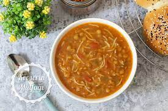
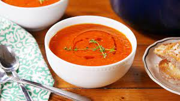
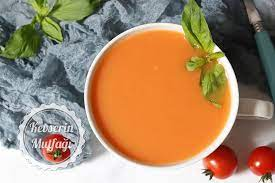
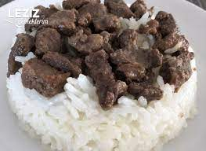
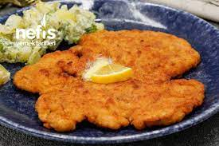
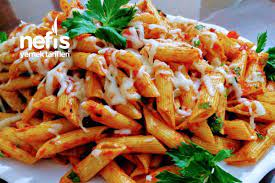
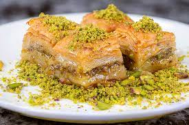
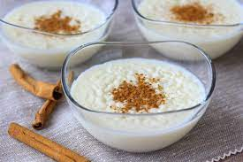
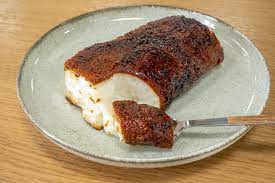

Çorbalar
-

Mercimek Çorbası
Leziz mercimek çorbası, taze sebzelerle hazırlanmaktadır.
-

Tarhana Çorbası
Geleneksel tarhana çorbası, yoğurt ve sebzelerle harmanlanmıştır.
-

Domates Çorbası
Taze domateslerle hazırlanan nefis domates çorbası.
Ana Yemekler
-

Etli Pilav
Yumuşacık etli pilav, yanında turşu ile servis edilir.
-

Tavuk Şinitzel
Çıtır tavuk şinitzel, patates kızartması ve garnitür ile sunulur.
-

Sebzeli Makarna
Taze sebzelerle hazırlanan nefis makarna.
Tatlılar
-

Baklava
Geleneksel baklava, fıstık ve şerbetle tatlandırılır.
-

Sütlaç
Fırında pişirilen sütlü tatlı, tarçınla servis edilir.
-

Kazandibi
Muhallebi tabanlı, karamelize edilmiş kazandibi tatlısı.